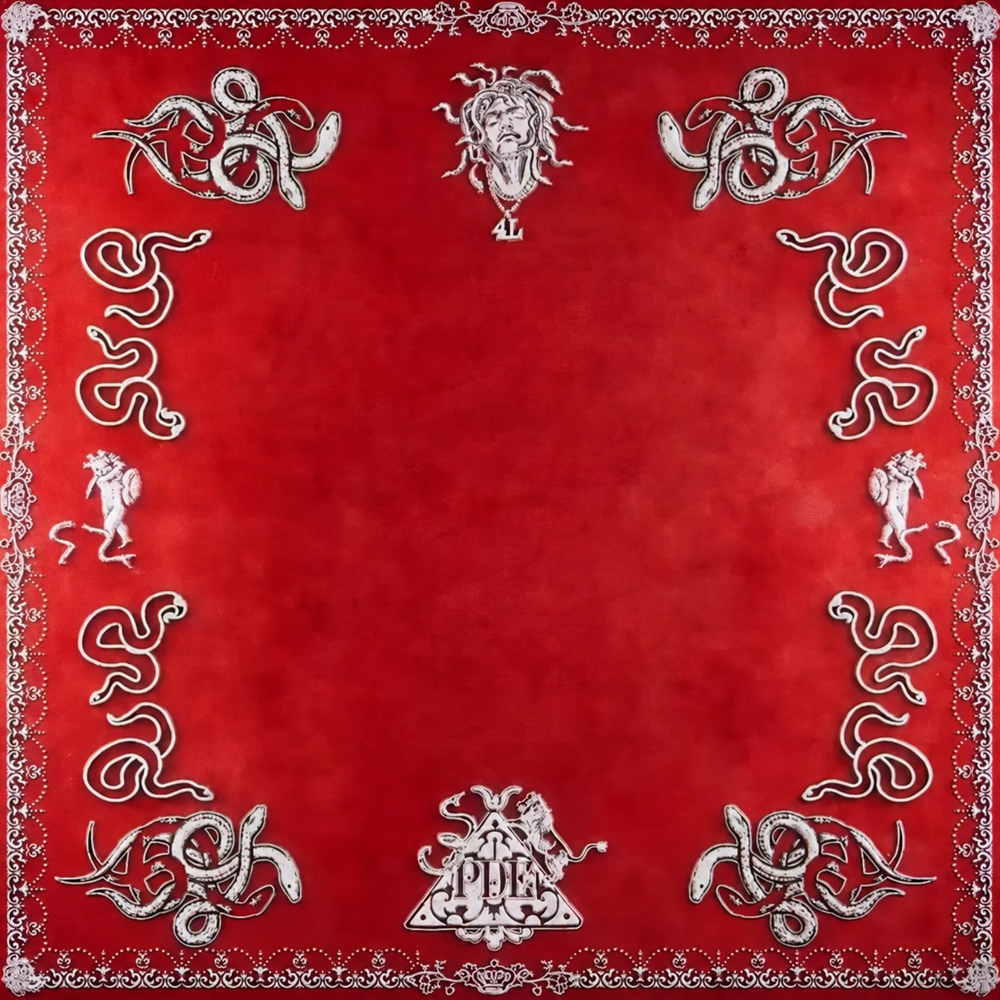

THE NEW ALBUM
16 TRACKS. ALL NUDY.
16 TRACKS. ALL NUDY.

01 / THE UNFOLDA LITTLE RED. A WHOLE WORLD.
SCROLL TO UNFOLD ↓
02 — LISTEN
Out now.
Everywhere.
Pick your platform. Every link opens straight to the album.
03 — THE TRACKS
Sixteen cuts.
No skips required.
Every track has its own link. Tap one to share it straight to the group chat.
04 — WALLPAPERS
Put it on
your lock screen.
Built from the cloth and the print. 1080 × 1920, with room for your clock.